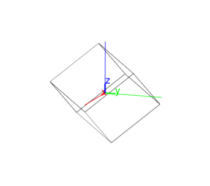
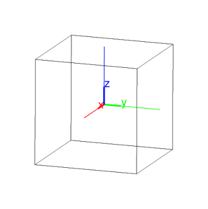

14.17.2 Centered cubes: centered_cube
The centered_cube command draws a cube.
-
centered_cube takes three arguments:
A,B,C, three points.
- centered_cube(A,B,C) returns and draws the cube
centered at A with a vertex at B and plane of symmetry ABC.
This plane of symmetry has an edge of the cube containing B, the
other endpoint of this edge is on the same side of line AB as C.
Examples
-
Input:
centered_cube([0,0,0],[3,3,3],[0,1,0])
Output:

- Input:
centered_cube([0,0,0],[3,3,3],[0,-1,0])
Output:

Note that there are two cubes centered at A with a vertex at
B and with a plane of symmetry ABC. Each cube has
an edge containing B that’s contained in plane of symmetry,
these edges are on opposite sides of the line AB. The cube
that cube(A,B,C) returns is the cube whose edge is on the
same side of AB as the point C.